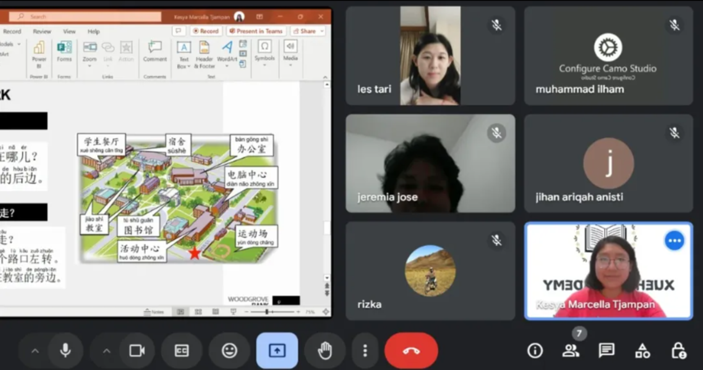
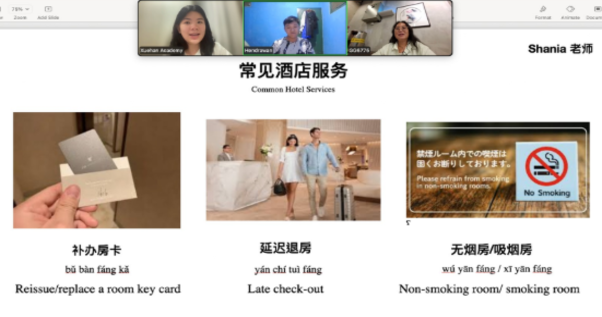
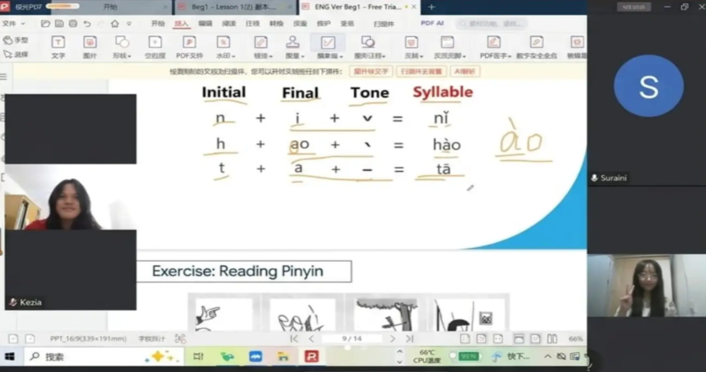
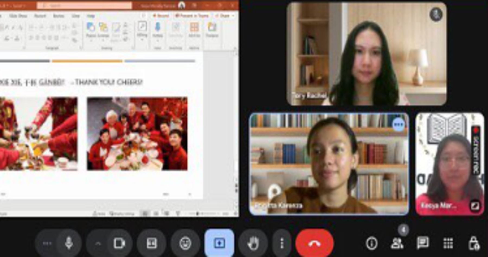

Xuehan Academy: Cara paling terstruktur dan menyenangkan menguasai Bahasa Mandarin dari nol hingga mahir. Dengan kurikulum praktis dan bimbingan Laoshi berpengalaman membantu akselerasi karir dan bisnis kamu.
Pertumbuhan Penanaman Modal Asing (PMA) dari Tiongkok di Indonesia mengalami lonjakan pesat. Namun, industri kini menghadapi tantangan nyata berupa gap kendala SDM lokal yang siap kerja dan menguasai Bahasa Mandarin praktis secara profesional.
"Perusahaan-perusahaan Tiongkok banyak beroperasi di beberapa kota di Jawa Timur. Mereka butuh banyak tenaga administrasi, manajemen, hingga operasional yang menguasai Bahasa Mandarin."
"Dalam aktivitas sehari-hari, ia dituntut untuk berkomunikasi menggunakan Mandarin traditional dalam percakapan sehari-hari."
Kami menyediakan ekosistem belajar Mandarin terbaik untuk memastikan kamu siap kerja dan percaya diri berkarir global.
Akses modul digital interaktif kapan saja serta buku fisik eksklusif yang dikirim langsung ke rumahmu.
Kurikulum Praktis dan Aplikatif Tidak hanya hapal tata bahasa, di Xuehan kamu belajar Mandarin yang langsung terpakai untuk dunia kerja, negosiasi bisnis, dan persiapan HSK untuk kuliah ke luar negeri
Belajar langsung bersama Laoshi bersertifikasi HSK yang menguasai metodologi pengajaran Pinyin dan Hanzi yang ramah bagi pembelajar Indonesia.
Kami membuka layanan pendaftaran dan persiapan tes HSK sebagai bukti kualifikasi kompetensi Bahasa Mandarin untuk melamar kerja atau studi.
Konsultasi dan panduan eksklusif untuk persiapan pendaftaran beasiswa serta pengalaman tinggal di China.
Interaktif, santai, dan dipandu langsung oleh Laoshi berpengalaman.




Temukan metode belajar yang paling cocok dengan target dan fleksibilitas waktu Anda.
Kelas Mandarin eksklusif 1-on-1 dengan Laoshi dan jadwal pilihan yang fleksibel sesuai kebutuhan Anda.
Kelas Mandarin interaktif yang berisi 4 - 10 orang. Belajar seru dan diskusi aktif bersama teman sekelas.
Tinggalkan kontakmu, dan tim Xuehan Academy akan menghubungimu kurang dari 24 jam via WhatsApp.